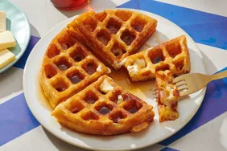

Waffle Recipe

Ingredients List
- 2 large eggs
- 2 cups all purpose flower
- 1 and 3/4 cups of milk
- 1/2 cup vegetable oil
- 1 tablespoon white sugar
- 4 teaspoons baking powder
- 1/4 teaspoon salt
- 1/2 teaspoon vanilla extract
- nonstick cooking spray
Directions
- Gather all of your ingredients and preheat a waffle iron according to manufacturers instructions
- Whisk your eggs in a large mixing bowl until light and fluffy. Add your flour, milk and vegetable oil and mix to combine. Whisk in the sugar then mix in the baking powder, salt and vanilla extract till it is smooth making sure not to overmix
- Spray the pre-heated waffle iron with some non-stick spray, pour the batter onto the hot iron and cook until golden brownand the iron stops steaming (3-5 minutes)
- Enjoy
Back to recipes page